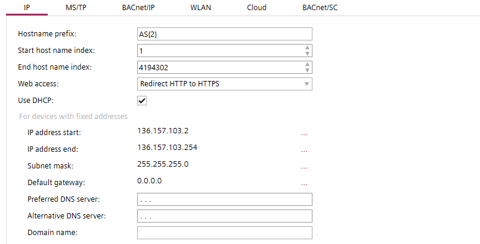
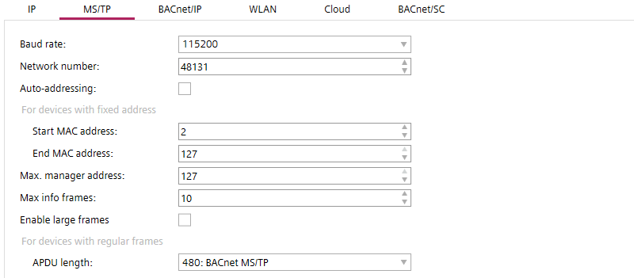
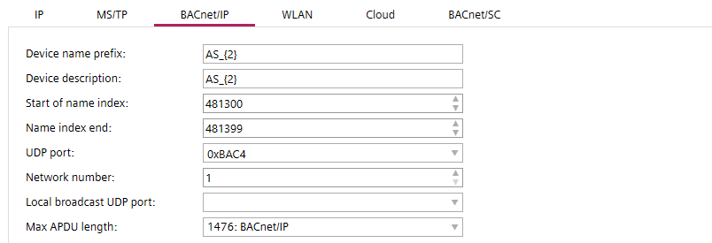
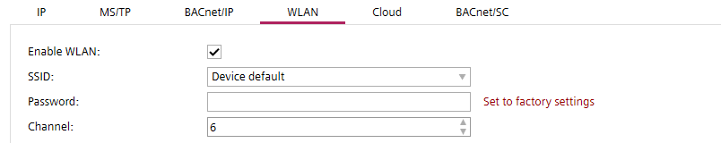
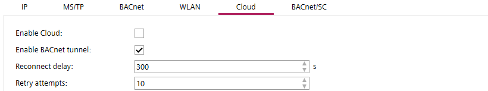
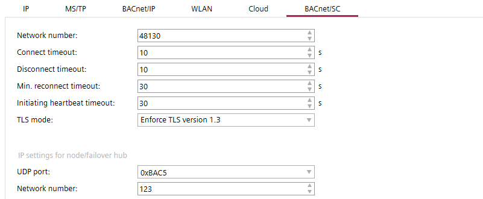

地址默认值
这Address defaults任务允许您配置项目的默认网络设置。
1 | 任务选择器 | 2 | IP tab |
3 | MS/TP tab | 4 | BACnet/IP tab |
5 | WLAN tab | 6 | 云选项卡 |
7 | BACnet/SC tab |
|
|
对于所有设备，以下属性在项目中必须是唯一的：
- Device name
- Device instance number
- IP address
- MS/TP address (combination of MAC address and network number)
- Serial number (must be unique or empty)
Checking for duplicate device properties
① Task selector
任务 | 描述 |
|---|---|
信息 | |
地址默认值 | |
设备默认值 | |
用户资料 | |
命名默认值 | |
本土化 | |
I/O 作业模板 | |
数字范围 | |
证书 |
② IP tab

环境 | 描述 |
|---|---|
主机名前缀 | 输入主机名的前缀和前导零的数字。最大字符数为 15。允许的字符为 a-z、A-Z、0-9 和“-”。默认值为“AS”。 |
启动主机名索引 | 第一个可用的主机名索引。默认值为 1。 |
结束主机名索引 | 最后可用的主机名索引。默认值为 4194302。 |
网络访问 | 确定 Web 接口端口的 HTTP 连接设置。 HTTP 使用端口 80。HTTPS 使用端口 443。
|
| 如果选择DHCP（动态主机配置协议），则用于自动配置设备端口。 Note |
IP 地址开始 | 分配给设备端口的第一个数字标签。 |
IP address end | 可以分配给设备端口的最后一个数字标签。 |
子网掩码 | 指定较大网络中的子网。 |
默认网关 | 指定 TCP/IP 网络上充当另一个网络的访问点的节点。 |
首选 DNS 服务器 | 首选域名服务器的地址。如果 DHCP 服务器不可用，则用于云连接的路由信息。 |
替代 DNS 服务器 | 备用域名服务器的地址。如果 DHCP 服务器不可用，则用于云连接的路由信息。 |
域名 | 域名例如西门子网。设置域后，可以使用域名对设备进行寻址，例如 AS_01.siemens.net。 |
 Use DHCP
Use DHCPAutonumbering – Name pattern
某些对象的名称和描述可以自动扩展为数字。名称模式由固定部分（例如 AS_ 表示自动化站）和自动编号部分（例如 {2} 表示 2 个前导零）定义。
示例模式：
- "B_{2}"
Resulting in names as "B_01", "B_02", "B_09", "B_10", "B_99", "B_100" - "{3}_B"
Resulting in names as "001_B", "002_B", "009_B", "010_B", "999_B", "1000_B" - "B_{1}-ABC"
Resulting in names as "B_1-ABC", "B_2-ABC", "B_9-ABC", "B_10-ABC" - ""
Resulting in names as "1", "2", "9", "10" - "B_"
Resulting in names as "B_1", "B_2", "B_9", "B_10"
NOTICE

不受保护的物理网络访问 (HTTP) 可能会中断或劫持通信。未经授权访问客户站点可能会导致系统故障或自动化站故障。
高昂的修复成本和声誉损失。
- Do not allow http connections. Only use secure connections (https).
③ MS/TP tab

环境 | 描述 |
|---|---|
波特率 | 指定数据发送到总线的速率。默认值为 38400 到 76800。
|
网络号 | 标识网络的编号。 |
自动寻址 | 激活后，将自动获取以下 MAC 地址设置：
|
起始 MAC 地址 | MS/TP 端口的第一个 MAC 地址。 |
End MAC address | MS/TP 端口的最后一个 MAC 地址。 |
最大管理地址 | 设置最大管理器地址以防止将令牌传递到位于管理器之后未使用的 MAC 地址。 |
最大信息帧数 | 向其他设备请求信息的最大数量。 |
| 扩展路由器 MS/TP 中继中的帧长度。 |
Max APDU length | 指定网络设备 APDU 的最大长度（以字节为单位）。以下值可用：
|
 启用大框架
启用大框架
Enable large framescheckbox is applicable in MS/TP property of PXC5, PXC7, PXC4.M & DXR2.M devices only.
④ BACnet/IP tab

环境 | 描述 |
|---|---|
设备名称前缀 | 输入新创建设备的默认前缀和前导零的数字。 |
设备描述 | 键入设备的描述和前导零的数字。 |
名称索引的开头 | 连接到网络时设备的第一个索引号。 |
名称索引结束 | 连接到网络时设备的最后一个索引号。 |
UDP Port | 以十六进制格式指定从 BAC0 到 BAD4 的 UDP 端口。默认值为 BAC0。 |
网络号 | 指定网络号 |
本地广播UDP端口 | 用于本地广播设置的 UDP 端口（默认 0xBB02 = 47874）。本地广播 UDP 用于不需要 BBMD 路由的消息，例如用于分组命令。 |
Max APDU length | 指定网络设备 APDU 的最大长度（以字节为单位）。以下值可用：
|
⑤ WLAN tab

ABT 站点允许与具有内置无线接入点的设备进行无线连接。
设备上存在 WLAN 超时。闲置 15 分钟后，设备的无线接入点将关闭。要手动重新启用设备上的 WLAN，请按服务按钮。
确保在工程过程中更改设备的默认无线密码（通常是序列号）。设备设置的任何更改都需要设备满载。或者，您可以在使用 play/pause 函数进行增量下载后激活 Web 界面中的设置。
Configure and download
Using play/pause function
具有 WLAN 功能的设备的默认项目设置。创建设备时，将使用这些默认项目设置。稍后阶段对项目设置的修改不会影响现有设备。您可以在设备详细信息中单独设置每个设备的 WLAN 设置。
Details pane of the device version ≤ 1.5
财产 | 描述 |
|---|---|
| 选择通过停止服务 BACnet 属性启用 WLAN 端口。 |
SSID | 选择SSID由设备的 WLAN 端口使用。 不同的选项SSID如下：
|
密码 | 设置设备的 WLAN 端口使用的密码。最大限度。 63 个字符。 要将密码设置为出厂设置，请选择Device default从SSID选项列表并确认Set to factory settings。要查看默认出厂设置，请扫描设备上的 QR 代码。 QR code information: WIFI:S:PXC4.E16_0000550;T:WPA;P:1400052738;; 手动确定：使用 Date/Series/SN 块中的信息： |
渠道 | 设置设备的 WLAN 端口使用的通道。 |
⑥ Cloud tab

配置设备云连接的默认项目设置。
财产 | 描述 |
|---|---|
| 选择通过enable-connectivity BACnet 属性启用云端口。如果启用，如果互联网可用，设备将自动连接。 |
| 选择通过enable-BACnet-tunnel BACnet 属性禁用BACnet 隧道。 |
重新连接延迟 | 设置重新连接延迟时间（以秒为单位）。 |
重试尝试 | 设置连接丢失时云对象的重试次数。 |
⑦ BACnet/SC tab

What is BACnet Secure Connect?
环境 | 描述 |
|---|---|
网络号 | 启用安全连接端口时的默认网络号。默认值为 55189。 |
连接超时 | 设置连接尝试被中断之前的时间限制。默认值为 10 秒。 |
断开连接超时 | 请求从一台设备断开到另一台设备的连接。在指定时间后没有应答，设备认为已断开连接。默认值为 10 秒。 |
分钟。重新连接超时 | 设置连接超时后尝试重新连接之前的时间限制。默认值为 30 秒。 |
启动心跳超时 | 如果在指定时间内没有通信，它将触发心跳请求消息以验证连接是否仍处于活动状态。默认值为 30 秒。 |
TLS mode | 定义使用哪个 TLS 版本：
|
UDP port | 指定主集线器的默认 BACnet UDP 端口。默认值为 0xBAC5。 |
网络号 | 指定节点 /failover 集线器的 IP 网络号。默认值为 123。 |